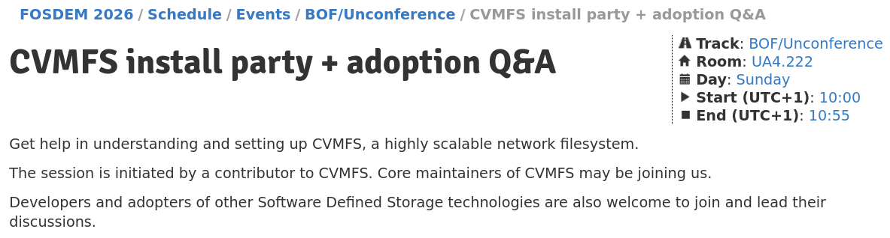

Multi-Petabyte Data Distribution in Industry & Science with CernVM File System
CVMFS
Publish command in action
cvmfs_rsync in action
Lazy pulling in action
Normal image pulling
Q & A
Georgios Christodoulis, CERN
georgios.christodoulis@cern.ch
|
Andriy Utkin
hello@autkin.net
|
|

|
|
Open Source at CERN
|

|